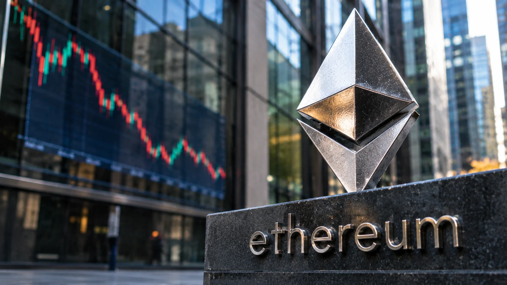

Ether ETF Outflows Continue as Ethereum Developers Review Glamsterdam Risks
Weekly fund withdrawals and a separately announced testnet delay raise different questions for Ethereum: investor demand and the safety of a planned network upgrade.

U.S. spot ether exchange-traded funds recorded a combined $365.2 million in net outflows during the five trading days ending November 6, according to the daily figures published by Farside Investors. The result extends a period of weak demand for exchange-traded ether exposure. At the same time, Ethereum developers are investigating how proposed gas-accounting changes might affect existing smart contracts before proceeding with the Glamsterdam upgrade on the Hoodi test network.
These developments should not be presented as evidence of a single new Ethereum crisis. Fund flows measure transactions in regulated investment vehicles; the testnet delay is a technical precaution related to future changes in how the protocol charges for certain operations. Neither figure independently establishes that today's Ethereum mainnet is malfunctioning.
What the fund-flow table actually shows
Farside reports daily net totals of minus $139.7 million on Monday, November 2; minus $85.3 million on Tuesday; plus $53.0 million on Wednesday; minus $99.9 million on Thursday; and minus $93.3 million on Friday. The five entries sum to minus $365.2 million. This week included one positive session, so the correct description is a negative weekly total, not uninterrupted daily withdrawals.
The largest contribution came from BlackRock's iShares Ethereum Trust ETF, ETHA, which recorded roughly $345.9 million in outflows across those five sessions. Its single-day result on November 6 was minus $90.8 million. Individual competitors reported smaller changes and some funds had daily inflows. The aggregate should therefore not be interpreted as if every investor or every fund acted identically.
Flows reflect creations and redemptions within the ETF structure, not a direct reading of how many people purchased or sold ether across the wider market. A negative flow may accompany changes in hedging, relative-value positions or portfolio allocations. TTN Finance explained the difference between fund ownership and direct coin ownership in its guide to what crypto ETFs change.
The site also published a separate report on the combined $1.65 billion weekly withdrawals from bitcoin and ether ETFs. The present article's distinct focus is the ether-specific breakdown and the protocol-development issue, rather than repeating that broader cross-asset total.
Was it really a sixth consecutive week?
Several market summaries described the November 2–6 result as the sixth consecutive negative week for U.S. ether ETFs. That streak is secondary reporting unless each weekly total is independently reconstructed from the fund-flow history. The directly verified figure in this article is the $365.2 million five-day withdrawal. Readers should not confuse the existence of a reported streak with a statistically reliable forecast of what the next week will bring.
Ether's weekend dollar price was reported around $2,200–$2,250 by cryptocurrency publications, but spot prices vary by venue and minute. A fixed figure from Saturday or Sunday should always carry its measurement time and exchange. In particular, the ETF flow table closes on Friday and cannot itself provide a live Saturday or Sunday price.
Glamsterdam: what was postponed and when
The Ethereum Foundation said on October 22 that the planned Glamsterdam activation on the Hoodi testnet, formerly scheduled for October 26, had been postponed. There was no replacement activation date in that announcement. That is the actual date of the postponement; portraying it as a surprise decision taken on November 8 would mislead readers.
The Foundation published a further technical explanation on November 6. It said security work had identified applications that could encounter problems with assumptions about gas accounting after EIP-8037 and EIP-8038 change the costs of creating and accessing state. Some smart contracts rely on fixed gas stipends or explicit assumptions about how much gas remains. Developers are investigating those cases before settling the next testnet schedule.
The Foundation said it was working with security specialists including ChainSecurity and Dedaub, and asked application developers to review the affected invariants. A paused testnet upgrade is not an emergency rollback of the live network. The announcement explicitly said no action was required from mainnet users or ether holders solely because of the postponed Hoodi activation.
Why gas repricing has practical consequences
Smart contracts pay for computing and storage-related operations in gas. If the cost of particular operations changes, code that assumed an old limit might fail, even if its economic intent has not changed. This is why compatibility testing matters: a successful protocol proposal still needs to be safe for the applications that operate on top of it.
What deserves attention next
The broader market context is covered in TTN Finance's bitcoin prediction-market analysis, which describes the uncertainty in interpreting trader expectations.
Three concrete developments matter more than a technical support line drawn on a price chart: the following week's confirmed ETF subscriptions and redemptions, a new Hoodi activation schedule from the Ethereum Foundation, and publication of any updated security guidance for affected application developers. Investors should also distinguish onchain activity statistics from evidence of durable revenue or cash flows.
The clear conclusion is narrower than the dramatic headlines. Fund demand was negative in the week ending November 6. Ethereum developers postponed a testnet upgrade weeks earlier and reiterated the technical reasons on November 6. Both deserve reporting, but they describe different risks and should not be merged into an unsupported claim of a live-network security incident.